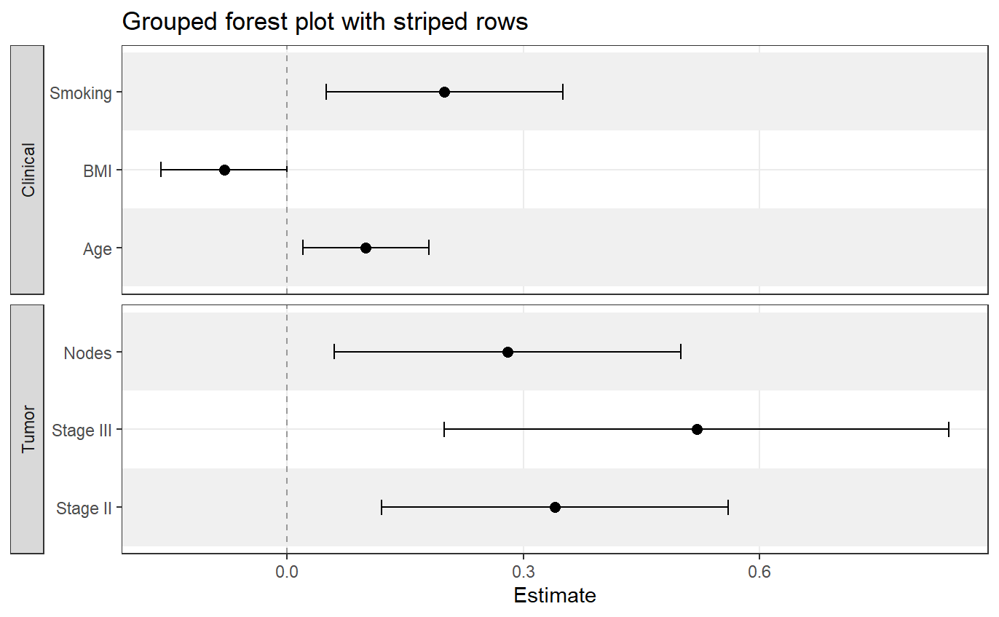
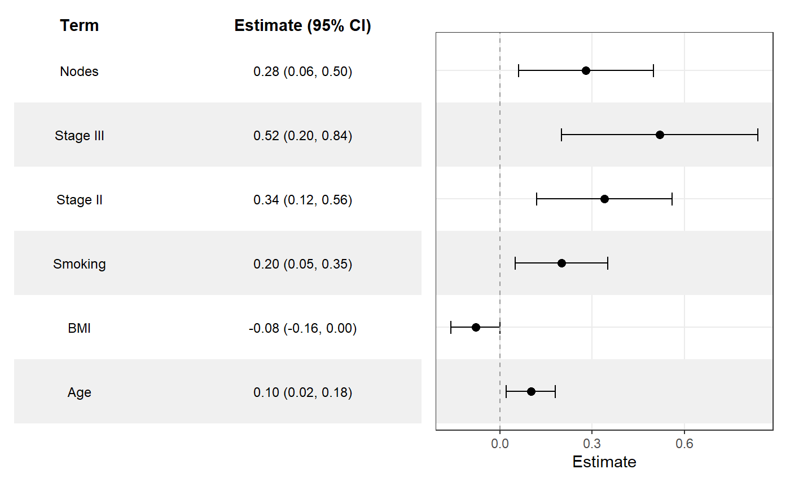
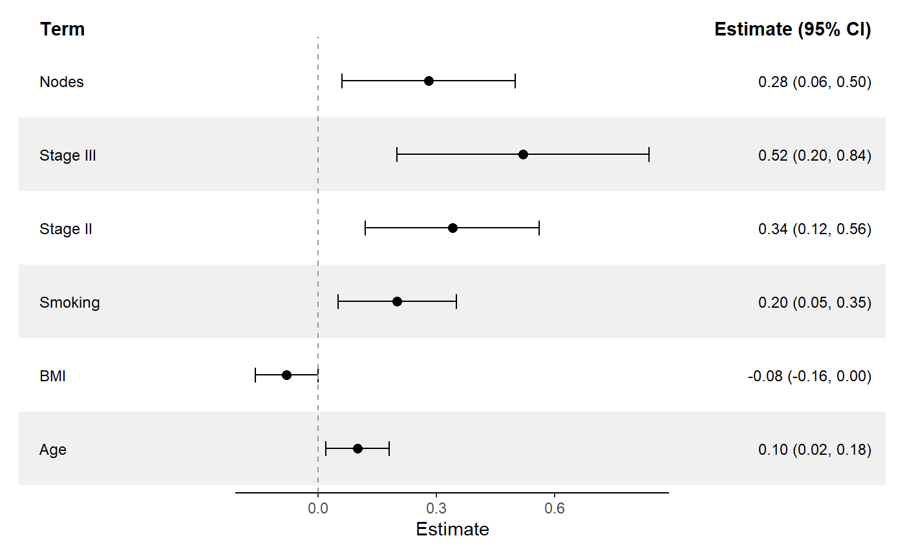

Overview
ggforestplotR provides a ggplot2-first workflow for building forest plots from tidy coefficient tables or fitted model objects.
Installation
CRAN
install.packages("ggforestplotR")Supported workflows
ggforestplotR currently supports two core workflows:
- Plot directly from a table of coefficient data.
- Plot using data from a fitted model object.
Basic example
library(ggforestplotR)
library(ggplot2)
sectioned_coefs <- data.frame(
term = c("Age", "BMI", "Smoking", "Stage II", "Stage III", "Nodes"),
estimate = c(0.10, -0.08, 0.20, 0.34, 0.52, 0.28),
conf.low = c(0.02, -0.16, 0.05, 0.12, 0.20, 0.06),
conf.high = c(0.18, 0.00, 0.35, 0.56, 0.84, 0.50),
section = c("Clinical", "Clinical", "Clinical", "Tumor", "Tumor", "Tumor")
)
ggforestplot(
sectioned_coefs,
grouping = "section",
striped_rows = TRUE,
stripe_fill = "grey94",
grouping_strip_position = "right"
)
Add a summary table
ggforestplot(
sectioned_coefs,
striped_rows = TRUE,
stripe_fill = "grey94"
) +
add_forest_table()
Add a split summary table
ggforestplot(
sectioned_coefs,
striped_rows = TRUE,
stripe_fill = "grey94"
) +
add_split_table()
Learn more
- Get started: https://thatoneguy006.github.io/ggforestplotR/articles/ggforestplotR-get-started.html
- Plot & Table customization: https://thatoneguy006.github.io/ggforestplotR/articles/ggforestplotR-plot-customization.html
- Data helpers: https://thatoneguy006.github.io/ggforestplotR/articles/ggforestplotR-data-helpers.html
Main functions
-
ggforestplot()builds the plotting panel from a data frame or supported model object. -
add_forest_table()attaches a summary table to the left or right side of the plot. -
add_split_table()creates a more traditional forestplot layout with table columns on both sides of the plot. -
as_forest_data()standardizes custom coefficient data. -
tidy_forest_model()converts fitted models into plotting-ready coefficient data.